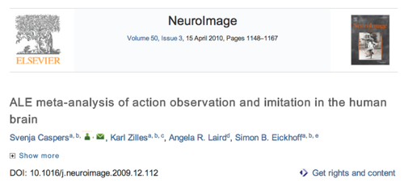
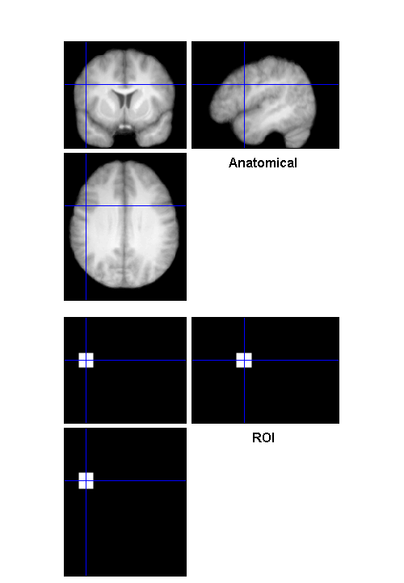

Contents
- Making ROIs from Activation Peak Coordinates
- Use the HELP function to see documentation for using "bspm_coords2roi"
- Define the inputs
- Run it
- Check to make sure it looks like left inferior frontal gyrus
- Here's what a box looks like. A BIG box.
- Run it
- Check to make sure it looks like left inferior frontal gyrus
Making ROIs from Activation Peak Coordinates
Imagine you study the neural bases of action understanding, and you want to test hypotheses about regions that have been consistently implicated in previous neuroimaging studies of action understanding. You notice this meta-analysis in NeuroImage:
You read the paper and find Table 3, which contains a bunch of meta-analytically defined coordinates:

Wouldn't it be nice to easily convert those coordinates into ROI images that you can use in your own research? Here's a way:
Use the HELP function to see documentation for using "bspm_coords2roi"
help bspm_coords2roi
BSPM_COORDS2ROI
USAGE: bspm_coords2roi(ref,xyz,roi)
ARGUMENTS
xyz = coordinates (rows are ROIs)
roi.shape = 'Sphere' or 'Box'
roi.size = radius of ROI
Uses code authored by:
Dr. Robert Welsh (SimpleROIBuilder.m)
Drs. Donald McLaren & Aaron Schultz (peak_nii.m)
Define the inputs
xyz = [-50 9 30]; % the XYZ coordinate from the top of Table 3 roi.shape = 'Sphere'; % Box is an option too roi.size = 9; % radius of our sphere (millimeters) labels = 'L_IFG'; % label for the region (for the filename)
Run it
bspm_coords2roi(xyz, roi, labels);
ROI file created: ROI_Sphere9_-50_9_30_L_IFG.nii
Check to make sure it looks like left inferior frontal gyrus
anatimg = 'mean_wanat_hires.nii'; roiimg = 'ROI_Sphere9_-50_9_30_L_IFG.nii'; bspm_checkreg({anatimg; roiimg}, {'Anatomical' 'ROI'}, xyz);

Here's what a box looks like. A BIG box.
xyz = [-50 9 30]; % the XYZ coordinate from the top of Table 3 roi.shape = 'Box'; % Box is an option too roi.size = 18; % radius of our sphere (millimeters) labels = 'L_IFG'; % label for the region (for the filename)
Run it
bspm_coords2roi(xyz, roi, labels);
ROI file created: ROI_Box18_-50_9_30_L_IFG.nii
Check to make sure it looks like left inferior frontal gyrus
anatimg = 'mean_wanat_hires.nii'; roiimg = 'ROI_Box18_-50_9_30_L_IFG.nii'; bspm_checkreg({anatimg; roiimg}, {'Anatomical' 'ROI'}, xyz);